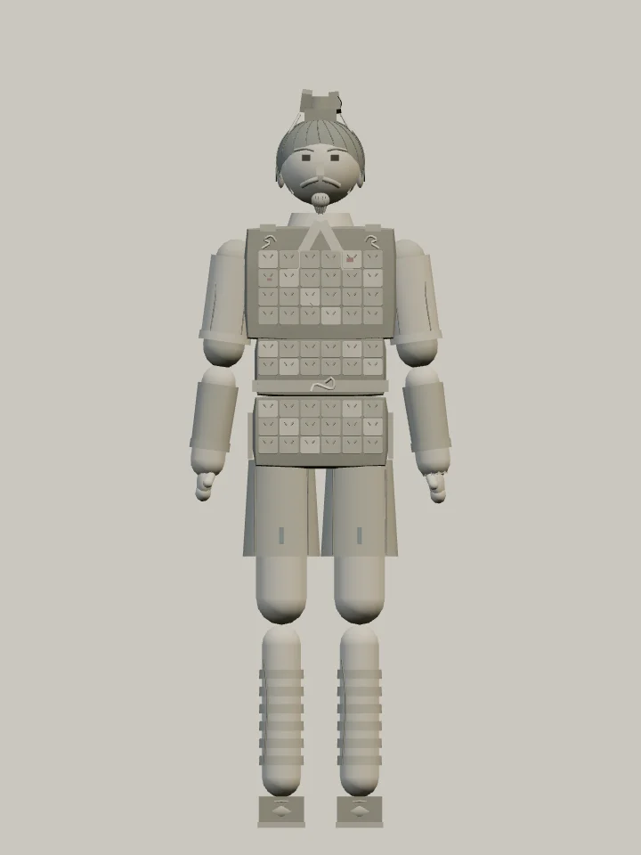

적막 · 둔황에서 착안한 무대
천불의 절벽
초가을 아침, 메마른 강바닥을 건너온 바람이 석굴 앞뜰에 모래를 흘립니다. 절벽에는 수많은 문이 열려 있고, 빛바랜 비천은 여전히 벽 위를 날고 있습니다.

돌아가지 못한 월의 혼
몸은 진의 무덤을 위해 빚었으나, 그 안에서 깨어난 것은 고향을 잃은 월의 기억입니다. 서쪽으로 향하던 행렬이 멈춘 뒤, 병마용은 부서진 수레에서 월왕구천검을 거두었습니다. 검을 돌려줄 월나라도, 원한을 물을 이름도 남지 않았습니다.
병마용은 피를 흘리지 않습니다. 머리가 몸에서 떨어져야 죽습니다. 몸통 공격만으로는 끝낼 수 없습니다. 머리·목을 세게 베거나 찌르고, 둔기로 목 연결부를 부수세요. 팔다리를 손상시켜 자세를 무너뜨릴 수도 있습니다.



회계의 치욕, 한 배를 탔던 밤
와신상담으로 기억되는 구천의 인내, 그리고 회계지치(會稽之恥). 병마용은 『사기』의 치욕을 되새기는 말과 「월인가」의 그리움을 번갈아 되뇝니다. 새 목소리 녹음은 없으며, 글로 전해지는 오래된 기억입니다.
"너는 회계의 치욕을 잊었느냐?"
『사기』 권41 「월왕구천세가」 — 女忘會稽之恥邪？
이 대목에는 쓸개를 맛보는 장면이 나옵니다. ‘섶 위에서 잔다’는 내용까지 이 기록에서 확인한 것은 아닙니다.
"오늘은 무슨 날이기에, 왕자와 한 배를 타는가."
"산에는 나무가 있고 나무에는 가지가 있건만, 그대를 좋아하는 내 마음을 그대는 모르네."
『설원』 「선설」에 전하는 「월인가」 — 오늘의 대사는 원문을 직접 옮긴 한국어 발췌입니다. 본래 초 왕족을 향한 월인 뱃사람의 연정을 노래하며, 월나라의 군가나 구천의 시는 아닙니다.
돌아오지 못한 행렬
절벽 건너편의 모래에 운반수레가 반쯤 묻혔습니다. 부러진 채, 내려앉은 천막, 열린 궤짝 속 흙병사의 얼굴. 바퀴 자국은 바람에 끊겼지만 빈 적재함 하나는 아직 누군가 돌아오기를 기다리는 듯합니다.

절벽 맞은편에도 길은 이어진다
수레 너머에는 자갈이 남은 마른 강바닥, 그리고 불규칙하게 겹친 암릉이 이어집니다. 실제 막고굴이 대천하 건너 삼위산을 바라보는 지형에서 착안했습니다. 골짜기 사이로 더 먼 능선이 드러나며, 가까운 바닥에서 지평선까지 시선이 이어집니다.
바람, 목재, 모래
깊은 회랑과 겹처마를 갖춘 목조 누각 아래로 희미한 바람과 모래 소리가 흐릅니다. 가끔 흔들리는 목재 표찰이 조용히 울립니다. 병마용은 사람의 신음 대신 무기와 몸이 부딪치는 소리를 남깁니다.


찬다에게 건너간 흰 검
마지막 수문지기 찬다는 막야를 듭니다. 오래전 물길을 따라 건너온 검을 수문의 열쇠처럼 물려받았다는 설정입니다.
막야를 든 찬다와 대련하기월의 기억·진나라 병마용·후대의 둔황 석굴을 연결한 창작 설정입니다. 진이 월을 멸망시켰다는 이야기는 아닙니다. 특정 석굴의 복원도는 아닙니다. 이번 캐릭터와 무대는 별도 대련판에서 먼저 만날 수 있습니다.